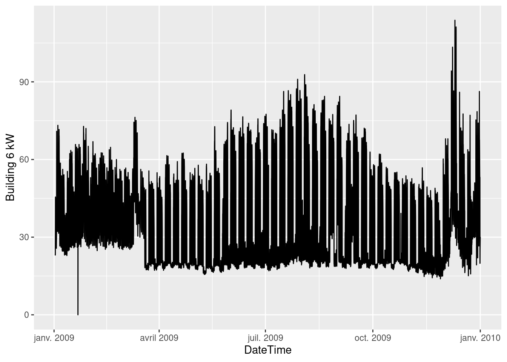
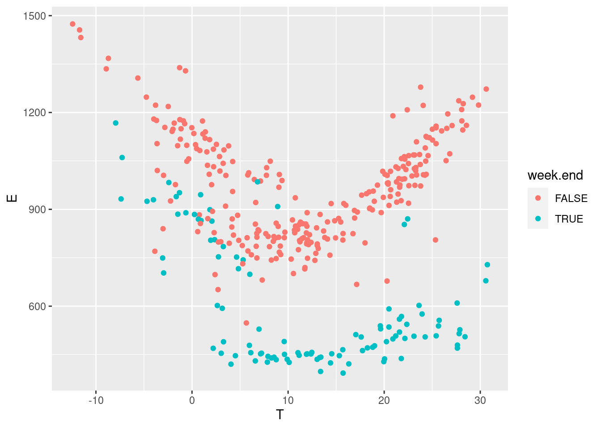

Chapter 6 Example: option C in commercial buildings
The data used in this example is the hourly energy consumption and outdoor air temperature data for 11 commercial buildings (office/retail), publicly available here:
https://openei.org/datasets/dataset/consumption-outdoor-air-temperature-11-commercial-buildings
We will be using two data files, respectively labeled Building 6 (Office “Pre”), and Building 6 (Office “Post”).
6.1 Loading and displaying the data
The following block loads two separate data files:
building60preoffice.csvis the baseline period file, saved into the df.base variablebuilding60postoffice.csvis the reporting period file, saved into the df.repo variable
The Date column of both files is converted into a DateTime type into a new column. Then, the baseline dataset is displayed for a first exploratory look at the data.
# Baseline data: one year
df.base <- read_csv("data/building60preoffice.csv") %>%
mutate(DateTime = mdy_hm(Date),
Date = as_date(DateTime))
# Post-retrofit data: one year
df.repo <- read_csv("data/building62postoffice.csv") %>%
mutate(DateTime = mdy_hm(Date),
Date = as_date(DateTime))
# Plot the original data
head(df.base)## # A tibble: 6 x 4
## Date OAT `Building 6 kW` DateTime
## <date> <dbl> <dbl> <dttm>
## 1 2009-01-02 41.6 23.3 2009-01-02 00:00:00
## 2 2009-01-02 40.9 23.1 2009-01-02 01:00:00
## 3 2009-01-02 39.5 23.7 2009-01-02 02:00:00
## 4 2009-01-02 36.3 29.1 2009-01-02 03:00:00
## 5 2009-01-02 32.8 35.6 2009-01-02 04:00:00
## 6 2009-01-02 32.5 45.5 2009-01-02 05:00:00 A few interesting observations:
- The data has a hourly time step size. Every hour, the outdoor air temperature (OAT in °F) and energy use (kW) are available.
- The energy use is higher in summer and in winter than in-between. This suggests that this consumption data includes both heating and cooling appliances.
- Week-ends are clearly visible with a lower consumption than in the working days of the week.
6.2 Daily averaged data
Averaging the data over daily time steps should allow to overlook the dependence between consecutive measurements. In turn, this allows using a model which will be much simpler than time series models, but will only be capable of low frequency predictions.
The following block creates new datasets from the original ones:
- Measurements are daily averaged
- Temperatures are switched to °C for international suitability.
- A categorical variable is added to indicate week ends.
Then, we plot the daily energy use \(E\) (kWh) versus the outdoor temperature \(T\) (°C) for both values of the week.end categorical variable.
daily.average <- function(df) {
df %>%
group_by(Date) %>%
summarise(OAT = mean(OAT),
E = sum(`Building 6 kW`),
.groups = 'drop'
) %>%
mutate(wday = wday(Date),
week.end = wday==1 | wday==7,
T = (OAT-32) * 5/9)
}
df.base.daily <- daily.average(df.base)
df.repo.daily <- daily.average(df.repo)
ggplot(data = df.base.daily) +
geom_point(mapping = aes(x=T, y=E, color=week.end)) # Modelling and training
6.3 Step 1: Model definition
After looking at the data, we can suggest using a change-point model which will include the effects of heating and cooling, and separate week ends from working days. The expected daily energy use \(E\) (in kWh per day) is a function of the outdoor temperature \(T\) and of a number of parameters:
- For the week-ends: \(p(E|T) \sim \mathcal{N}\left[\alpha_1 + \beta_{1,h}(\tau_{1,h}-T)^+ + \beta_{1,c}(T-\tau_{1,c})^+, \sigma\right]\)
- For the working days: \(p(E|T) \sim \mathcal{N}\left[\alpha_2 + \beta_{2,h}(\tau_{2,h}-T)^+ + \beta_{2,c}(T-\tau_{2,c})^+,\sigma\right]\)
Where the 1 and 2 subscripts indicate week-ends and working day, respectively, and the \(h\) and \(c\) subscripts indicate heating and cooling modes. The \(+\) superscript indicates that a term is only applied if above zero.
The two equations above mean that we expect the energy use \(E\) to be a normal distribution centered around a change-point model, with a constant standard deviation \(\sigma\). Some particularities of Bayesian statistics are: this normal distribution can be replaced by any other probability distribution; the error term \(\sigma\) can be formulated as a function of some inputs; etc.
This model has 11 possible parameters, which makes it significantly more complex than an ordinary linear regression. We could simplify it by assuming that the “working days” and “week ends” mode share the same temperature thresholds for heating (\(\tau_{1,h}=\tau_{2,h}\)) or for cooling (\(\tau_{1,c}=\tau_{2,c}\)). The following method would also be exactly the same if we decided to complexify the model, for instance by assuming non-linear profiles on each side of the change points, or if we had more categorical variables.
6.4 Model specification with STAN
In this example, we use the STAN probabilistic programming language, which allows full Bayesian statistical inference.
A STAN model is a block of text which can either be written in a separate file, or in the same script as the current code. Specifying a model in STAN takes a certain learning curve, but it unlocks the full flexibility of Bayesian analysis.
changepoint <- "
functions {
// This chunk is the formula for the changepoint model which will be used several times in this program
real power_mean(int w, real t, vector alpha, vector beta_h, vector tau_h, vector beta_c, vector tau_c) {
real a = w ? alpha[1] : alpha[2]; // condition on the type of day
real heat = w ? beta_h[1] * fmax(tau_h[1]-t, 0) : beta_h[2] * fmax(tau_h[2]-t, 0) ;
real cool = w ? beta_c[1] * fmax(t-tau_c[1], 0) : beta_c[2] * fmax(t-tau_c[2], 0) ;
return (a + heat + cool);
}
}
data {
// This block declares all data which will be passed to the Stan model.
int<lower=0> N_base; // number of data items in the baseline period
vector[N_base] t_base; // temperature (baseline)
int w_base[N_base]; // categorical variable for the week ends (baseline)
vector[N_base] y_base; // outcome energy vector (baseline)
int<lower=0> N_repo; // number of data items in the reporting period
vector[N_repo] t_repo; // temperature (reporting)
int w_repo[N_repo]; // categorical variable for the week ends (reporting)
vector[N_repo] y_repo; // outcome energy vector (reporting)
}
parameters {
// This block declares the parameters of the model. There are 10 parameters plus the error scale sigma
vector[2] alpha; // baseline consumption (work days and week ends)
vector[2] beta_h; // slopes for heating
vector[2] tau_h; // threshold temperatures for heating
vector[2] beta_c; // slopes for cooling
vector[2] tau_c; // threshold temperatures for cooling
real<lower=0> sigma; // error scale
}
model {
// Assigning prior distributions on some parameters
alpha ~ normal([400, 800], [150, 150]);
tau_h ~ normal(8, 5);
tau_c ~ normal(18, 5);
beta_h ~ normal(40, 15);
beta_c ~ normal(40, 15);
// Observational model
for (n in 1:N_base) {
y_base[n] ~ normal(power_mean(w_base[n], t_base[n], alpha, beta_h, tau_h, beta_c, tau_c), sigma);
}
}
generated quantities {
vector[N_base] y_base_pred;
vector[N_repo] y_repo_pred;
real savings = 0;
for (n in 1:N_base) {
y_base_pred[n] = normal_rng(power_mean(w_base[n], t_base[n], alpha, beta_h, tau_h, beta_c, tau_c), sigma);
}
for (n in 1:N_repo) {
y_repo_pred[n] = normal_rng(power_mean(w_repo[n], t_repo[n], alpha, beta_h, tau_h, beta_c, tau_c), sigma);
savings += y_repo_pred[n] - y_repo[n];
}
}
"Then, a list called model_data is created, which maps each part of the data to its appropriate variable into the STAN model.
6.5 Step 2: Model fitting
Now that the model has been specified and the data has been mapped to its variables, the syntax for model fitting is below.
One disadvantage of Bayesian inference is that the MCMC algorithm takes much longer to converge than a typical least-squares model fitting method. Running the code below might take a minute because we are only using 365 data points, but the Bayesian approach might become problematic for larger data files (100,000 rows or more).
# Fitting the model
fit1 <- stan(
model_code = changepoint, # Stan program
data = model_data, # named list of data
chains = 2, # number of Markov chains
warmup = 1000, # number of warmup iterations per chain
iter = 4000, # total number of iterations per chain
cores = 2, # number of cores (could use one per chain)
refresh = 0, # progress not shown
)Fitting may result in a number of warnings, telling us that some problems may have occurred: divergent transitions, large R-hat values, low Effective Sample Size… Obtaining a fit without these warnings takes some practice but is essential for an unbiased interpretation of the inferred variables and predictions. A guide to Stan’s warnings and how to address them is available here: https://mc-stan.org/misc/warnings.html
The first step into solving these warnings is to re-run the algorithm with different controls: iter, max_treedepth, etc. If problems persist, it is possible that the model is too complex for the information that the data is able to provide and should be simplified, or that stronger priors should be proposed. A lot of problems can be solved with some prior information. In our specific case, this is especially useful for the variables in the equation for the week-ends, since there are not a lot of data points.